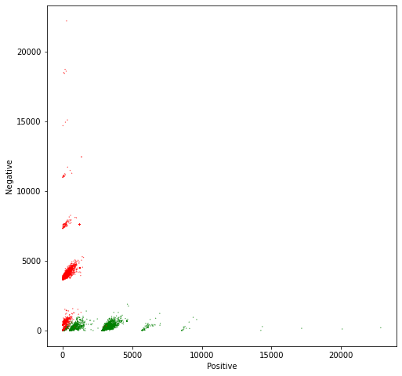
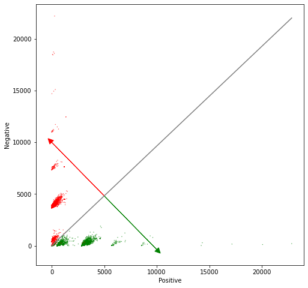

This projest deals with classification of IRIS dataset. SO we built our own decision tree and compared the performance with sklean library
1 Visualizing tweets and the Logistic Regression model
Objectives: Visualize and interpret the logistic regression model
Steps: * Plot tweets in a scatter plot using their positive and negative sums. * Plot the output of the logistic regression model in the same plot as a solid line
1.1 Import the required libraries
We will be using NLTK, an opensource NLP library, for collecting, handling, and processing Twitter data. In this lab, we will use the example dataset that comes alongside with NLTK. This dataset has been manually annotated and serves to establish baselines for models quickly.
So, to start, let’s import the required libraries.
import nltk # NLP toolboxfrom os import getcwdimport pandas as pd # Library for Dataframes from nltk.corpus import twitter_samples import matplotlib.pyplot as plt # Library for visualizationimport numpy as np # Library for math functionsfrom utils import process_tweet, build_freqs # Our functions for NLPnltk.download('twitter_samples')
[nltk_data] Downloading package twitter_samples to
[nltk_data] /home/jovyan/nltk_data...
[nltk_data] Unzipping corpora/twitter_samples.zip.
True
1.2 Load the NLTK sample dataset
To complete this lab, you need the sample dataset of the previous lab. Here, we assume the files are already available, and we only need to load into Python lists.
# select the set of positive and negative tweetsall_positive_tweets = twitter_samples.strings('positive_tweets.json')all_negative_tweets = twitter_samples.strings('negative_tweets.json')tweets = all_positive_tweets + all_negative_tweets ## Concatenate the lists. labels = np.append(np.ones((len(all_positive_tweets),1)), np.zeros((len(all_negative_tweets),1)), axis =0)# split the data into two pieces, one for training and one for testing (validation set) train_pos = all_positive_tweets[:4000]train_neg = all_negative_tweets[:4000]train_x = train_pos + train_neg print("Number of tweets: ", len(train_x))
Number of tweets: 8000
2 Load the extracted features
Part of this week’s assignment is the creation of the numerical features needed for the Logistic regression model. In order not to interfere with it, we have previously calculated and stored these features in a CSV file for the entire training set.
So, please load these features created for the tweets sample.
data = pd.read_csv('./data/logistic_features.csv');# Load a 3 columns csv file using pandas functiondata.head(10) # Print the first 10 data entries
bias
positive
negative
sentiment
0
1.0
3020.0
61.0
1.0
1
1.0
3573.0
444.0
1.0
2
1.0
3005.0
115.0
1.0
3
1.0
2862.0
4.0
1.0
4
1.0
3119.0
225.0
1.0
5
1.0
2955.0
119.0
1.0
6
1.0
3934.0
538.0
1.0
7
1.0
3162.0
276.0
1.0
8
1.0
628.0
189.0
1.0
9
1.0
264.0
112.0
1.0
Now let us get rid of the data frame to keep only Numpy arrays.
# Each feature is labeled as bias, positive and negativeX = data[['bias', 'positive', 'negative']].values # Get only the numerical values of the dataframeY = data['sentiment'].values;# Put in Y the corresponding labels or sentimentsprint(X.shape) # Print the shape of the X partprint(X) # Print some rows of X
In the same way, as part of this week’s assignment, a Logistic regression model must be trained. The next cell contains the resulting model from such training. Notice that a list of 3 numeric values represents the whole model, that we have called theta\(\theta\).
The vector theta represents a plane that split our feature space into two parts. Samples located over that plane are considered positive, and samples located under that plane are considered negative. Remember that we have a 3D feature space, i.e., each tweet is represented as a vector comprised of three values: [bias, positive_sum, negative_sum], always having bias = 1.
If we ignore the bias term, we can plot each tweet in a cartesian plane, using positive_sum and negative_sum. In the cell below, we do precisely this. Additionally, we color each tweet, depending on its class. Positive tweets will be green and negative tweets will be red.
# Plot the samples using columns 1 and 2 of the matrixfig, ax = plt.subplots(figsize = (8, 8))colors = ['red', 'green']# Color based on the sentiment Yax.scatter(X[:,1], X[:,2], c=[colors[int(k)] for k in Y], s =0.1) # Plot a dot for each pair of wordsplt.xlabel("Positive")plt.ylabel("Negative")
Text(0, 0.5, 'Negative')

From the plot, it is evident that the features that we have chosen to represent tweets as numerical vectors allow an almost perfect separation between positive and negative tweets. So you can expect a very high accuracy for this model!
2.3 Plot the model alongside the data
We will draw a gray line to show the cutoff between the positive and negative regions. In other words, the gray line marks the line where \[ z = \theta * x = 0.\] To draw this line, we have to solve the above equation in terms of one of the independent variables.
The red and green lines that point in the direction of the corresponding sentiment are calculated using a perpendicular line to the separation line calculated in the previous equations (neg function). It must point in the same direction as the derivative of the Logit function, but the magnitude may differ. It is only for a visual representation of the model.
\[direction = pos * \theta_2 / \theta_1\]
# Equation for the separation plane# It give a value in the negative axe as a function of a positive value# f(pos, neg, W) = w0 + w1 * pos + w2 * neg = 0# s(pos, W) = (-w0 - w1 * pos) / w2def neg(theta, pos):return (-theta[0] - pos * theta[1]) / theta[2]# Equation for the direction of the sentiments change# We don't care about the magnitude of the change. We are only interested # in the direction. So this direction is just a perpendicular function to the # separation plane# df(pos, W) = pos * w2 / w1def direction(theta, pos):return pos * theta[2] / theta[1]
The green line in the chart points in the direction where z > 0 and the red line points in the direction where z < 0. The direction of these lines are given by the weights \(\theta_1\) and \(\theta_2\)
# Plot the samples using columns 1 and 2 of the matrixfig, ax = plt.subplots(figsize = (8, 8))colors = ['red', 'green']# Color base on the sentiment Yax.scatter(X[:,1], X[:,2], c=[colors[int(k)] for k in Y], s =0.1) # Plot a dot for each pair of wordsplt.xlabel("Positive")plt.ylabel("Negative")# Now lets represent the logistic regression model in this chart. maxpos = np.max(X[:,1])offset =5000# The pos value for the direction vectors origin# Plot a gray line that divides the 2 areas.ax.plot([0, maxpos], [neg(theta, 0), neg(theta, maxpos)], color ='gray') # Plot a green line pointing to the positive directionax.arrow(offset, neg(theta, offset), offset, direction(theta, offset), head_width=500, head_length=500, fc='g', ec='g')# Plot a red line pointing to the negative directionax.arrow(offset, neg(theta, offset), -offset, -direction(theta, offset), head_width=500, head_length=500, fc='r', ec='r')plt.show()

Note that more critical than the Logistic regression itself, are the features extracted from tweets that allow getting the right results in this exercise.
That is all, folks. Hopefully, now you understand better what the Logistic regression model represents, and why it works that well for this specific problem.